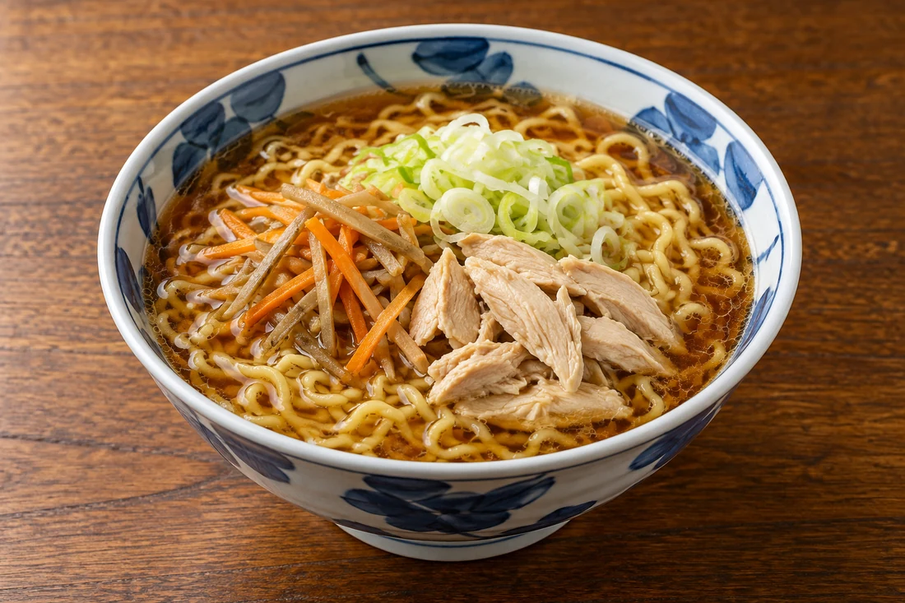
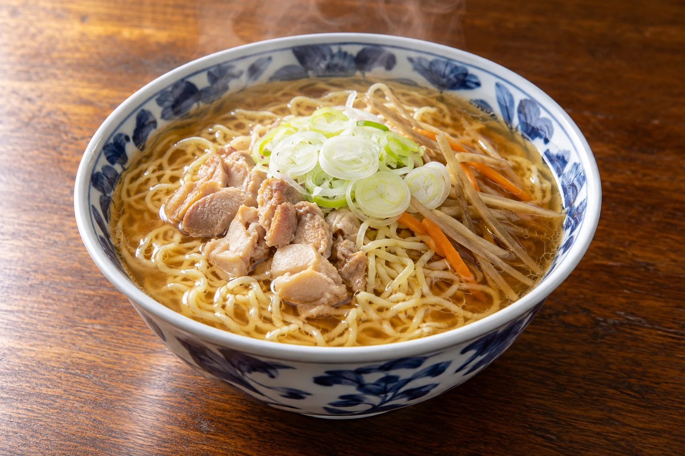

01
鳥中華
ちぢれた中華麺に、鶏と野菜のだし。ねぎをたっぷり添えた一杯です。

鶏と野菜の味わいを、だしとともに。
寿々喜そば屋の鳥中華
鶏の味わいに、ごぼうやにんじん。
たっぷりのねぎを添えて、
だしと麺を一緒に味わう、漆山の鳥中華。
料理の内容・価格・営業時間は変更になる場合があります。
だしを味わう
つゆをひと口、麺をひと口。
ねぎや野菜と一緒にお楽しみください。
やさしいだしに、具材の味わい。
ご利用の前に
営業時間やメニューの最新情報をご確認のうえ、
お越しください。
食物アレルギーやお苦手な食材は事前にお知らせください。対応の可否は店舗にご確認ください。
鶏肉に、ねぎ、ごぼうやにんじんを合わせた、だしのきいた中華麺です。内容は店頭でご確認ください。
板そばや鳥そばなどをご用意しています。当日の内容・価格は店頭でご確認ください。
駐車場があります。場所や空き状況は店舗へお問い合わせください。
営業時間は変更になる場合があります。夜の営業についてはお電話でご確認ください。
ACCESS / 店舗案内
営業日・時間は変更になる場合があります。お出かけ前にご確認ください。
Google マップを開く地図から経路をご確認いただけます。
山形市漆山 / そばと鳥中華